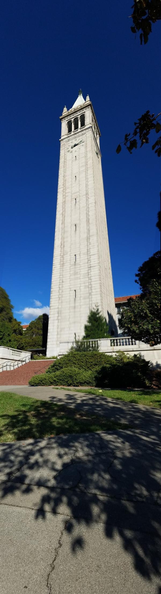

CS 194-26 Project 6A - Image Warping and Mosaicing
Austin Luong
Overview
The goal of this project is to be able to compute homographies between images. Using this, we can project the points of an image to match those those of another image. This lends itself to interesting applications such as image rectification and mosaic / panorama building.
Computing Homographies
Let p' represent points in a desired output image and p represent points from an input image (where p and p` are homogenous coordinates). We wish to find a transformation (a homography in this case) H such that p' = Hp. We can set up a linear system of equations to find such an H exactly with just 4 point correspondences between the images (which are chosen manually). However, doing so with just 4 points will make our results very prone to noise and error in the choosing the point correspondences. In actuality, we use many more than 4 point correspondences and use least squares to find an H that minimizes the error between the predicted and desired output. After some math, we find that we need to solve the least squares problem below:
Where h_ij represents the elements of H, (x_i, y_i) represents the ith point in the input and (x'_i, y'_i) represents the correspondences ith point in the output.
Rectifying Images
Calculating homographies allows us to perform image rectification. First we pick points in an input image. Then we set the output points to those that we know those points would correspond to if we were looking at those points head on. For example, if we had an image of a room which had square tiles on the floor, we could rectify the image to the perspective of looking at the tiles top-down. We do this by selecting corners of the one of the tiles as our input points and then picking their correspondences to be a four points that make a square. We calculate the homography from these points and apply it to our input image to get a rectified view of our original image.
Scanning a Document
A piece of paper to be scanned
A rectified version of the sheet of paper
Sistine Chapel

A picture of the Sistine Chapel
Rectified view of the right wall
Creating Mosaics / Panoramas
Homographies also allow us to create image moasics from a set of input images with corresponding points. To do this, we pick point correspondences between pairs of overlapping images. We then apply the homographies to each pair of images to project one image onto another. In my examples, I only ever use three images, so in all cases I mapped a left and right image onto a center image and blending the resulting warped images.
I used two types of blending on the warped images: average blending and linear blending. For average blending, I simple averaged the portions of the warped images that overlapped and kept the rest of the warped images that did not overlap. Linear blending, is essentially the same but with one small modification: instead of simply averaging the overlapping regions, I used mask that gradually increased from 0 to 1 in the overlapping region (essentially a gradient from black to white) to blend the images. Average blending, usually created noticeable artifacts in the panorama while linear blending did not. Lienar blending did have problems with ghosting, however, which could have been solved using a blending technique such Laplacian pyramid blending.
For the results that follow, all images have been cropped to remove any black borders from the image (as seen in the picture at the top of the page).
Outside My Apartment


Average Blending
Linear Blending
Sproul Plaza
Average Blending
Linear Blending

Campanile
Average Blending
Linear Blending
Conclusion
This project taught me the power of homographies in be able to achieve a variety of useful and interesting effects. Image rectification, for example, has recently been popular in phone scanning apps.